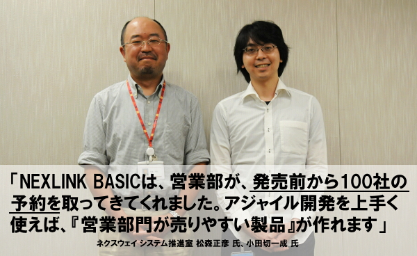
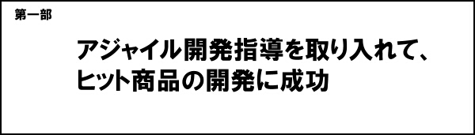
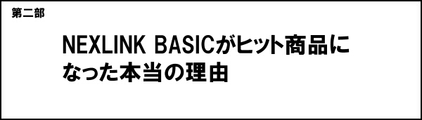
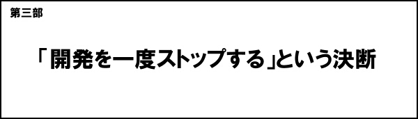
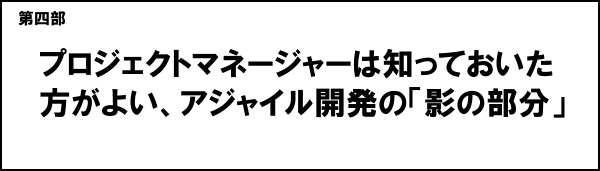

株式会社ネクスウェイ
ネクスウェイについてネクスウェイは、ソフトウエア、FAX、メールなどを通じてBtoBマーケティング支援する企業です。主な商品は、NEXLINK、eオンデマンド便サービス、e帳票-FAXサービスなど。年商72億円、取引法人 約8000法人、従業員数249名、創立は2004年10月。NEXLINK BASICについてNEXLINK BASICは企業のBtoBコミュニケーションを統合管理するためのクラウドサービスです。2013年1月に販売開始。流通小売、卸売の企業を中心に、幅広い支持を得ています。
ネクスウェイでは、新商品、NEXLINK BASICを開発するにあたり、永和システムマネジメントから「アジャイル開発の実地責任指導」を受けました。 おかげさまで、NEXLINK BASICは、発売前から予約100社以上を獲得する、弊社にとっては久々のヒット商品となりました。 ― 「実地責任指導」とは具体的には？ 永和さんのサービスは、どういう名前で呼べば良いかわからないのですが、カタカナで誤魔化さないよう、まずは「実地責任指導」と表現してみました。この単語にこめた意味をキーワードで表すと、次のようになります。
― キーワード1. 「コンサルティングとは呼びたくありません」とは具体的には？ 今回、永和から受けた指導は、ソフトウエア業界用語では、「コンサルティング」と呼ぶのかもしれません。しかし、私は「コンサルティング」という言葉に「悪いイメージ」を持っているのでその名前は使いたくありません。 私にとってのコンサルティングのイメージは、「言うだけ。やらない」、「上から目線」、「責任は持たない。言い逃げ」、「実は、本を読めば分かるような一般論しか言わなかったりする」、「なのに、ビックリするような金額の請求書が送られてくる」というものです。永和さんのサービスは、そのような「コンサルティング」とは一線を画する内容でした。
― キーワード2.「プロ野球のコーチは、割と近いと思います」とは？ アジャイルの世界では、「コンサルティング」といわず「コーチ」と呼ぶようです。実際、指導を受けながら、「この密着感は、確かにプロ野球のコーチとかに近いな」と実感しました。 第一に、具体的な指導があります。プロ野球のコーチでは、選手が打ったり投げたりする横にコーチがいて、具体的なアドバイスを加えていきますが、永和の場合も、私たちの設計やコーディングを実際に見て、それに具体的なアドバイスを加えるというやり方でした。 第二に、永和のみなさんは尊敬できます。プロ野球のコーチには、「野球選手として実績を残した人」など、選手から見て「尊敬できる人」がなります。永和のみなさんも、私たち開発者の目から見ても、「尊敬できる、アジャイル開発のプロ」でした。 第三に、プロならではの見識があります。アジャイルについては、以前から本やネットを通じて勉強していました。しかし、永和の指導には、自己流では及ばない、多くの優れた見識、ノウハウがありました。 最後に、目標を同じくする、密着感、一体感もありました。プロ野球のコーチは、選手と同じ球団に属し、共に勝利を目指します。永和さんにも同様の一体感を感じました。
今回、永和さんには設計や開発は依頼していません。「製品のコンセプトづくり」、「仕様策定・機能の策定」などは、すべてネクスウェイが行っています。 永和さんには、一貫して「方法」を学びました。具体的には、「開発全体の進め方」、「コンセプトを策定し、そのコンセプトを仕様に落とし込み、さらにそれを仕様をコーディングに落とし込む『方法』」、「予期せぬトラブルが起きたときの対処方法」などです。 「魚の釣り方は習う。しかし魚釣り自体は自分でやる」というイメージです。 また、今回は「アジャイル開発のやり方」の他に、「Ruby言語」も学びました。開発を始めた時は、ネクスウェイ側のスタッフは、Rubyは全員、初心者でしたが、永和のみなさんの指導のもと、最終的にRubyをきっちりマスターできました。
― 今回の「アジャイル開発の実地責任指導」の導入効果を教えてください。 「売れる製品が開発できたこと」が最大の導入効果です。NEXLINK BASICはおかげさまで、発売3カ月で数百社に納入できました。 以前の製品であるNEXLINKを、大きく上回る売れ行きです。 
― 商品がヒットしたのは、アジャイルという開発手法のおかげではなく、ネクスウェイの皆様の商品企画力が優れていたからなのでは？ それは、「いい商品だから、自然に売れた」という考え方ですね。 しかし、今回のNEXLINK BASICは、ほぼ明らかに、「いい商品だから売れた」のではなく、「営業部が売る気になってくれたから売れた」、「売りやすかったので売れた」というのがヒットの理由です。 では、なぜ今回、「営業部が売りやすい製品が作れたのか」といえば、これはアジャイル開発のおかげだったのです。
― なぜアジャイル開発を行うと「営業が売りやすい製品」が開発できるのですか。 根本のところからご説明します。 NEXLINK BASICには、その前身となった別製品、NEXLINKがあります（2011年*月発売）。自分で言うのも何ですが、このNEXLINKも、また、なかなかよい製品であり、導入いただいたお客様にも好評です。しかし「販売本数」はといえば、期待したほどには売れませんでした。 結局、NEXLINKは営業部にとって「売りにくい商品」だったのです。 このNEXLINKは、従来型の開発手法（ウオーターフォールモデル）で開発しました。最初に、まとめて設計し、仕様を決め、後は脇目もふらずにコーディングし、完成させます。その完成した製品を営業部に売ってもらうわけです。 この手法では、営業部の意見は、製品にはあまり反映されません。特に設計を終えて、開発が始まると、意見を取り入れることは不可能になります。結果として、NEXLINKは、営業部からは「機能多すぎ」、「何がウリなのか分かりにくい」、「説明しにくい」と評されました。 もっと平たく言えば、「あーあ、また開発部が売りにくいモノ作ってくれちゃったよ〜」と思われたわけです。 結果的に営業部はNEXLINKを、あまり売ってくれず、販売は伸びませんでした。企業向けBtoB商品は、一般消費者向けのBtoC商品のように、店に置いておけば勝手に売れるということはありません。営業部が売る気になってくれないかぎり、売れないのです。 これを反省して、今回のNEXLINK BASICの開発では、とにかく、営業部を巻き込むことを心がけました。
今回の開発では、2週間に1度、営業部に、作りかけの製品を見せました。そして営業部から意見を聞き、それを製品に反映させて、2週間後にまた見せるようにしました。営業部からは、「どんどん良くなっていくね」と好評になります。自分たちも設計に参加しているので、自ずと「説明しやすい商品」、「売りやすい商品」、そして何よりも「売りたい商品」になっていきます。 営業部は、NEXLINK BASICを、発売前から、積極的に売り込んでくれました。その結果、2013年1月の発売前から、100社を越える予約が獲得できたのです。 製品を2週間に1度見せるようなことは、従来型の開発手法では不可能であり、これはアジャイル開発ならではです。アジャイルを採用したことで、営業マンを「巻き込む」ことができたのです。
― NEXLINK BASICの開発体制の概要を教えてください。 NEXLINK BASICは、2012年1月に開発を開始し、一年かけて開発し、2013年1月にリリースしました。 開発体制は次のとおりです。
― 今回、アジャイル開発を、「自力で行う」のではなく、「外部からコーチを入れて行う」ことにした理由を教えてください。 コーチを入れることに決めた理由は、次の三点です。 理由1． 「一般論ではなく、具体的ノウハウを得たかった」 アジャイル開発については、多くの解説書が出版されています。しかし、書籍に書いてあるのは、「スマートな情報」や「一般的な理論」だけです。そうではなく、「開発現場の、いまそこにある問題」を解決するためのノウハウを得たい。そのノウハウは、コーチと共に「実際の問題」を解決していく中でしか得られないと考えました。 理由2． 「スタッフの潜在能力を、短期間で開花させたかった」 当時のスタッフは、開発者としての潜在力はあるものの、アジャイル開発やRuby言語については未経験、要するに「しろうと」でした。その彼らに、短期間で確実に結果を出させるには、やはり優れたコーチをつける方が良いと考えました。 理由3． 「最初は、自分たちだけでやってみたが、やっぱりうまくいかなかった」 実は、最初の頃は、コーチは起用せず、自分たちだけでアジャイル開発を成功させようと思っていたのです。NEXLINK BASICの開発を始める前の2011年に、半年かけて、なじみの開発会社さんと一緒に、アジャイル開発の枠組みづくりを試みました。しかし、その開発会社は、金融機関の重厚長大なシステム開発を得意とする会社だったので、結局は、「要件定義 → 設計 → 開発 → テスト」という従来の発想から抜けることができず、良い枠組みは作れませんでした。その後も、自己流を何度かトライしましたが、やはりダメだったので、潔くあきらめて（？）、コーチに正式に学ぶことを決めました。
― コーチングを依頼する会社として、永和システムマネジメントを選んだ理由を教えてください。 永和システムマネジメントは、「アジャイル開発について実績、技術、見識」は十分、日本でトップクラスでした。 また、コーチングも、「つきっきり型」「実地型」が可能でした。 そして、説明を受けて分かったのは、永和のみなさんは、「アジャイルの人のわりには、現実的で柔軟な対応が期待できそうだ」ということでした。
― 「アジャイルの人のわりには、現実的で柔軟な対応が期待できそう」とは具体的には？ アジャイル開発は、良くも悪くも「思想性」「アク」の強い開発手法です（※ 参考資料：「アジャイルソフトウェア開発宣言」）。 ただ、永和のみなさんは、いい意味で「ふつうの人」であり、日本の会社の「大人の事情」も理解した上で、不要の波風を立てず、柔軟に対処してくれそうでした。この人たちなら、「思想のゴリ押し」をしてくる心配もない。ウチの開発スタッフとも上手くコミュニケーションしてくれそうだと安心できました。 いろいろ説明を聞いた上で、最後に見積もりを求めましたが、「これなら払える」という現実的な金額でした。スモールスタートが可能なサービス体系であったことも導入しやすい点でした。 2011年12月に、永和システムマネジメントに、アジャイル開発のコーチングを依頼することを決定。その後のコーチングは、次のようなスケジュールで進みました。 約1年の開発期間を経て、NEXLINK BASICは、2013年1月16日にリリース。そして、冒頭、述べたとおり、予約だけで100本を売り上げるヒット商品となることができました。 
― NEXLINK BASICの開発中に、永和システムマネジメントからコーチングを受けていて印象に残ったことがあれば教えてください。 印象に残ったことは二つあります。一つは、「インセプション・デッキというプロセスに対し、開発責任者の小田切が、当初、反発を感じていたこと（でも、結局はやってよかったと思ったこと」、もう一つは、「永和システムマネジメントの提案により、途中で一度、開発をストップさせたこと」です。
― 印象に残ったこと その1. 「インセプション・デッキというプロセスに対し、開発責任者の小田切が、当初、反発を感じていたこと」とは具体的には。 アジャイル開発では、最初に「インセプションデッキ」という文書を作ります。大きくは「製品のコンセプトづくり」です。開発チームみなで話し合いながら、文書の空欄を埋めていきます。永和のコーチには、話し合いの過程で、逐一、アドバイスをいただきました文書の項目は次のとおりです。
（小田切氏）： もし今回のアジャイル開発が、「本を読んで自分たちでやる」という方針だったら、インセプションデッキは絶対にやっていないと思います。私は、「こんな儀式をやってるヒマがあったら、さっさとコーディング始めようよ」と発想するタイプだったので。 でも、今回、無理矢理に（？）経験してみて、「あ、これいいな」と思いました。考えが変わりました。
（小田切氏）： 平凡な表現ですが、開発責任者の私と、現場の開発者との間の距離が縮まり、「チームの一体感」が高まりました。互いに気心が知れて、会話がしやすくなるのです。 後で永和のコーチに聞いたところ、このインセプションデッキという作業は、できあがった文言に意味があるというよりは、文言を作り上げていく過程で、チーム各人の性格、考えた方のクセ、傾向への理解が深まることに真の価値があるとのことでした。なるほどと思いました。 インセプションデッキ、やってよかったと思います。
― 印象に残ったこと その2.「永和システムマネジメントの提案により、開発を途中で一度、ストップさせた」とは。 開発を開始して、3ヶ月後のある日、永和のコーチから、「今のままでは、正しいアジャイル開発にならない。製品のコーディングはいったん中止した方がよい」と助言がありました。コーチの言葉なので、受け入れて、開発は中断させました。 ― 「今のままでは正しいアジャイル開発にならない」とは。 当時は、開発途中の製品を2週間ごとに営業部門に見せるというサイクルを繰り返していました。この新しいやり方は、営業部からは好評で、開発チームも調子づいてきました。「アジャイル開発、いいね！」と。 しかし、永和のコーチからは、「営業部への成果物の提示を優先するあまり、開発が無秩序になっている。コードのスパゲティ化とテスト不足が進んでいる。このままでは、どこかで決定的に行き詰まる」という見解が示されました。 アジャイルでは、開発品質を保つために、「リファクタリング」と「テストプログラムの並行開発」を重視します。「リファクタリング」とは、コードがスパゲティ化しないよう、定期的に構造化してキレイにする作業を指します。「テストプログラムの並行開発」とは、開発中の本製品のコードを、自動的にテストしてくれるプログラムを開発することです。 永和のコーチからは、「いったん本製品の開発を中断してでも、リファクタリングとテストコード開発を強化した方が良い、そうしないと、最終的にまともな製品が完成しなくなる」という助言を受けました。
― 「開発を止めよ」という助言を聞いて、どう思いましたか。 「え〜、マジですか〜」というのが正直なところでした。 「コードをスパゲティ化させるな」、「柔軟なアジャイル開発だからこそテストが重要だ」と、それは頭では理解できます。 しかし、「開発を止める」というのは、非常にイメージが悪い。周囲からは「あいつら、開発止めちゃったよ。大丈夫かよ」という目で見られます。自分たちも「開発を止めるなんて…、俺たち失敗プロジェクトだ…」と自責してしまいます。 せっかく、2週間に一度の成果物発表が営業部に好評なのです。できれば、この良い流れのまま、最後まで行きたい。リファクタリングやテストコードの開発は、だましだまし、ほどほどにやって、何とか開発は止めずにすまないものか、そう内心で思いました。 しかし、永和のみなさんからは、あくまで「正論」が提示されました。結局、理を優先させ、開発はいちど中断。コードの整理とテストにじっくり取り組みました。 今、振り返ると、あのとき永和の助言を受け入れて本当に良かったと思います。あのまま進んでいたら、どこかで収拾がつかなくなっていたことでしょう。 この「開発の中断」だけでも、永和をコーチとして雇った価値があったと思います。内部の人間だけでは、そのような恐ろしい判断をするのは難しい。永和のような第三者の助言あっての決断です。 
― ここまではアジャイル開発の「光の部分（＝良い点）」をお話しいただきました。次に「影の部分」をお聞きしたいと思います。今回、実際に経験して分かったアジャイル開発の「不都合な点」、「良くないと思った点」について教えてください。 経験してみて分かったアジャイル開発の影の部分は次のとおりです。
― 影の部分1．「（（ウオーターフォール型の開発に比べて）表面的な成果物の量が少なくなる」とは具体的には？ 1カ月まとめて設計して、3カ月まとめてコーディングする。そんな従来型の開発手法の方が、成果物の量という点では、アジャイル型に優ります。ウオーターフォール型の開発なら、開発はガンガン進んで、成果物もガンガン出てくきます。 一方、アジャイル開発は、「今、開発している物は本当に必要な物なのか、常に考え、検証し続ける。必要な物を必要なだけしか作らないよう気を付ける」という開発手法なので、成果物の品質は上がりますが、「量」は少なくなるのです。 ビジネスオーナーの私にとっては、開発の進捗を「量」で認識できる、従来型の開発手法の方が、気分的には安心感があります。
― アジャイルの影の部分2．「運用・サポートとの折り合いが悪くなる」とは？ アジャイル開発の基本思想と、運用・サポート部門の考え方は、折り合いが良くありません。一例としては、アジャイル開発は、「オーバースペック」を嫌いますが、運用・サポート部門は基本的に「オーバースペック」を好みます。 ある機能を開発していて、「100点満点中で70点のスペック」が出せたとします。 アジャイル開発の考え方では、「とりあえず良しとしよう。70点なら、トラブルは年に一回出るか出ないかだ。もし問題が生じたら、その時、直せば良い（だいたい、そんなトラブルが本当に起きるかどうかもわからないし）」という考え方をとります。 これは、運用部門、サポート部門には、ある種、許しがたい考え方です。「そんないい加減な考え方で良いのか。トラブルの可能性は全て潰すべきだ。トラブルの芽を放置して、お客様に迷惑をかけることになったらどうするのだ」と反論が来るでしょう。 70点が確保できた機能を、さらに90点、95点に改善することを、アジャイル開発側では「オーバースペック」と見なして嫌い、運用・サポート側では、「二重三重の安全対策」として歓迎します。 真面目に考えるならば、安全第一を貫くべき気もしますが、それも行き過ぎると、「10年に1度出るか出ないか分からないクレームに備えて多機能、オーバースペックにした結果、ゴチャゴチャした、使いにくい、売りにくいソフトが完成する」ということにもなりかねません。 この問題は、アジャイルの基本思想と、運用・サポート部門の考え方の間の、「根本的な対立」なので、容易には解決できません。ビジネスオーナーとしては、都度都度の場面で、「ちょうど良い落としどころ」を見つけられるよう、判断を匙加減していくしかありません。 （※ なお、大技として、「開発者が運用・サポートも兼務する」という根本解決策があります。実現は難しいですが、この方式なら、確かに方針の対立はなくなります）
― 影の部分3．「人事評価が難しい」とは？ 開発者個々人の人事評価は、従来型のウオーターフォール型の開発の方がラクです。 第一に、従来型開発ならば、開発者を、大きくは成果物の「量」で評価すれば良いのでラクです。「設計で決まったこと」を、バリバリ、コーディングして、どんどん成果物を積み上げる人を良い開発者と見なして高評価すれば良い。一方、アジャイル開発は、前述のとおり、「成果物の量」を重視しません。この場合、評価の軸を定めるのが困難です。 第二に、従来型開発では、開発現場が階層化されているので、優秀な人は「昇格」させれば良い。人事的報償がラクです。一方、アジャイル開発では、開発現場はフラットであり、階層はありません。「開発はチームで行うものであり、評価は個人ではなくチームに帰すべきだ」というのが基本思想です。この場合、開発者「個人」へに向けて「昇格」などの人事的報償を与えることは難しくなります。
プロジェクトマネージャーのみなさんには、「アジャイル開発は、マネージャーの立場からすると、気持ち悪いことが多い。しかし、それに耐えなければいけない」、「経営陣と『握る』ことが必要」という二つのことをお伝えしたく思います。 第一に、アジャイル開発の気持ち悪さについて。アジャイル開発は、「営業部を巻き込んで、売れる製品を作り上げる」ためには、大変すぐれた手法です。実際、今回は、永和さんの支援もあり、NEXLINK BASICという「営業部が売ってくれる製品」を開発することができました。 しかし、一方では、先ほどの述べたような、「成果物の見かけの量が減少する」、「サポート部や運用部門との折り合いが難しい」、「人事評価も困難になる」など、プロジェクトを管理する立場から見て、「気持ち悪いこと」も多くなります。開発期間中には、この気持ち悪さにじっと耐えなければいけません。そこは覚悟した方が良いと思います。 第二に、「経営者と握ることの重要性」について。今回、NEXLINK BASICを開発するにあたり、私は、開発を始める前に、経営陣に対し、「NEXLINK BASICは『永遠に進化する製品』にします。そのためにアジャイル開発を取り入れます。初めての取り組みなので、最初は試行錯誤です。しかし、何か新しいことを始めないと、今の停滞は抜け出せません。つきましては開発開始から少なくとも半年の間は、何があっても、何もいわずに見守っていてください」と説明、要請をしました。 いわゆる、「経営層と『握る』」ということを事前に行ったわけです。 この「握り」なしに、開発を進めた場合、上手く行っていればそれで良いのですが、何かでトラブルが起きると、経営層からは、「鳴り物入りで、アジャイル開発を取り入れたのに、成果物の量は減るし、開発は途中で止まるし、ぜんぜんダメじゃないか」という悪印象を持たれる可能性があります。 最悪の場合は、「アジャイル開発はやめなさい。着実に成果を出せる、従来型の開発手法に戻しなさい」といわれることもありえます。 このような「最悪の事態」が起きないよう、経営層に十分な事前説明を行うことは、プロジェクト管理者の重要な使命です（※）。
最後に、補足として、「永和のみなさんは、つきあいやすい」ということをお伝えいたします。 永和をコーチとして招き入れる以上、そこには「先生・生徒」という、ある種の上下関係が発生します。しかし、それは形式上のこと。永和の方は、みなさん性格がよく、妙な上から目線はまったくなく、現場スタッフとの人間関係は、いつも良好でした。
― 永和システムマネジメントへの今後の期待をお聞かせください。 今回、永和システムマネジメントの支援のおけげで、「売れる商品」が開発できました。本当にありがとうございます。ネクスウェイの開発部門は、今後も「お客様にとって役に立ち」、かつ「営業部にとって売りやすい製品」を作り続け、お客様と会社の両方に貢献していく所存です。永和システムマネジメントには、アジャイル開発に関する高い技術とコーチング力とで、弊社の開発力向上の取り組みをご支援いただければ幸いです。今後ともよろしくお願いします。 ※ ネクスウェイのホームページ ※ 取材日時 2013年4月 ※ 文中に記載されている数値など情報は、いずれも取材時点のものです。 ※ 取材制作：カスタマワイズ |